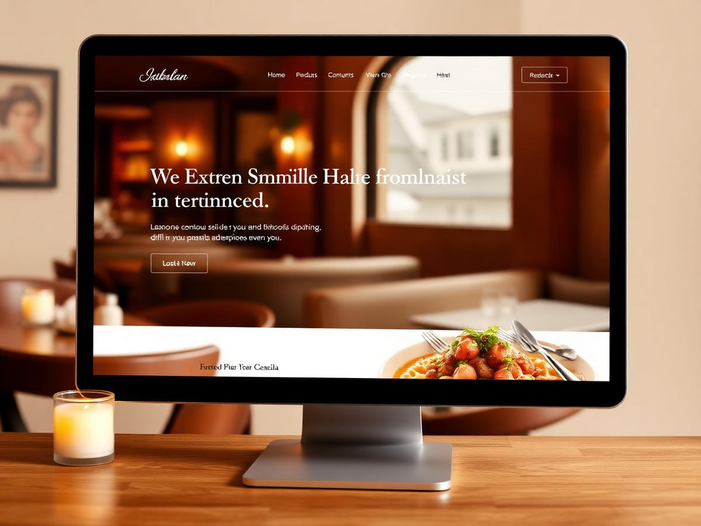
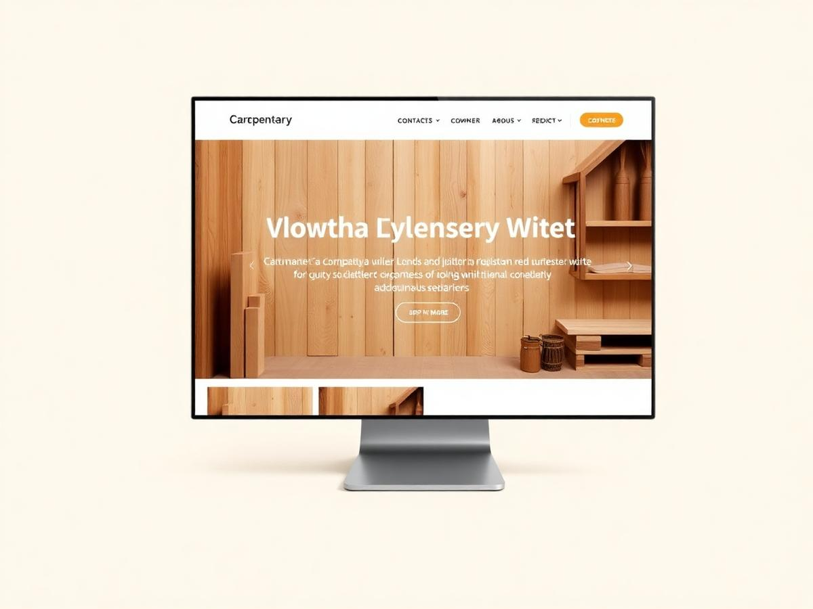
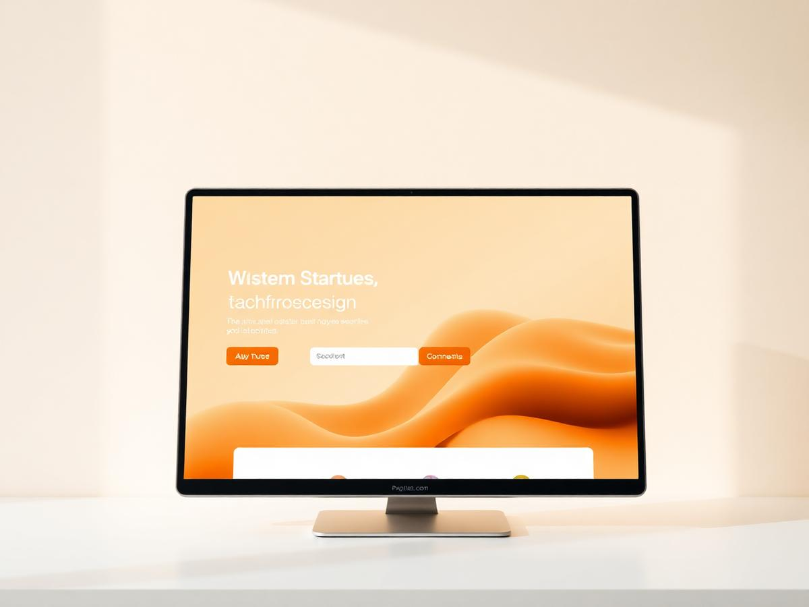
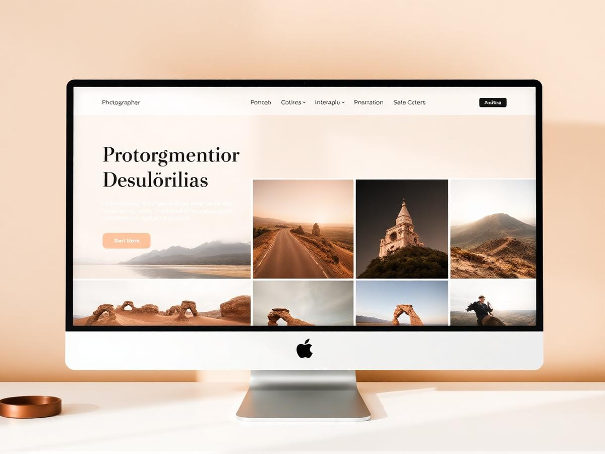

Gastronomie · Chur · 2025
Stiva Veglia
Bündner Restaurant mit digitaler Tageskarte, Tischreservation und mehrsprachiger Führung für Gäste aus der ganzen Region.
+62% ReservationenDesign, Entwicklung, Hosting
PORTFOLIO
Vom Bergrestaurant bis zum Software-Startup: Jedes Projekt entsteht in engem Austausch – und geht in der Regel in unter 14 Tagen live.

Bündner Restaurant mit digitaler Tageskarte, Tischreservation und mehrsprachiger Führung für Gäste aus der ganzen Region.
+62% ReservationenDesign, Entwicklung, Hosting

Schreinerei mit Referenzgalerie, Offert-Anfrage und Lehrstellen-Bereich. Komplett in 11 Tagen live gegangen.
11 Tage bis LaunchDesign, Entwicklung, Fotoregie

SaaS-Launchpage für ein Schweizer Software-Startup inklusive Funktionsübersicht, Demo-Funnel und Investoren-Onepager.
3.4× mehr Demo-LeadsPositionierung, Design, Entwicklung

Ruhiges Bildportfolio mit schnellen Galerien, Serienansicht und direkter Buchungsanfrage für Hochzeiten.
0.9s LadezeitDesign, Entwicklung